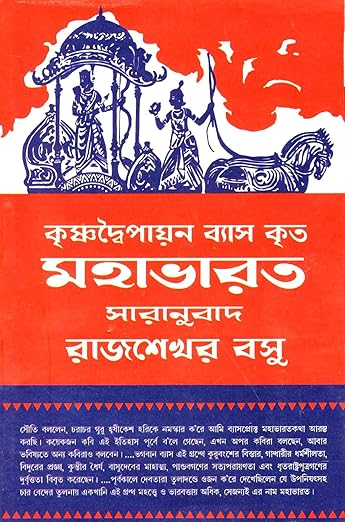

Mahabharath by KrishDwapiyan Vyaas is one of the greatest ancient Indian texts.
To read the epic in translation in entireity is difficult for common reader.
For the curious, the entire epic is an invaluable treasure of ancient culture,
none of it parts is ignoreable. But for common reader wishing to read the essential
narrative, many ancillaries and backstories are mere hinderances.

This website is a English translation of gist of Mahabharatha in Bengali. The translation itself
is based on the Bengali summary of the epic.
The summary contains all chapters
of the original and almost all sub-chapters; only parts such as detailed geneology,
excessive description of war scences, political, relegious and philosophical
discussions, hymns and oftrepeated parts and boring parts are smmarized or ommitted.
The purpose of summarization is to maintain the main theme as far as possible while
present the epic in an easy-to-read manner.
Mahabharath is a classic, in the true sense of the word.
This epic tale originally was rendered orally.
Then Ganesh wrote down as Vyasa narrated.
Then numerous createors contributed to the epic tale for
thousand of years.
The rendering medium went through many change
from papyrous to paper during that year.
This is my attempt to render this classic tale for the web.
Every medium brings its own flavors. The medium uses
its own idiom, its own style, highlights certain aspects
of the content. Music, Song, Paper, Film,
Kaliprasanna Singha invited North INdian Bramhins to extract
the narrative part of the story.
Graph versus Linear narrative.
Illustration